본 연구의 목적은 셰익스피어 작품들을 전통적인 장르 구분이 아니라, 작품 내부에서 나타나는 감정 흐름과 등장인물 관계망을 결합한 기준으로 재분류하는 데 있다. 이를 위해 각 작품의 감정 변동 양상을 정량적으로 분석하고, 인물 간 관계를 네트워크 형태로 분석하여, 두 결과가 함께 설명하는 서사적 패턴을 하나의 유형으로 정의한다. 각 유형의 대표작은 단순히 유명도가 높기 때문에 선정하는 것이 아니라, 해당 작품이 그 유형의 감정 구조와 관계 구조를 가장 명확하게 드러내는지를 기준으로 선정한다.
이 분석은 작품을 비극, 희극, 역사극으로 나누는 전통적인 분류를 반복하는 작업이 아니다. 장르는 보조 정보일 뿐이며, 실제 분류의 기준은 감정이 어떻게 전개되는가와 그 감정이 어떤 관계 구조 속에서 발생하는가이다. 다시 말해, 본 연구는 작품의 주제나 결말보다 작품 내부의 서사 작동 방식에 주목한다. 같은 장르에 속한 작품들 사이에서도 감정 전개와 관계망 구조는 서로 다르게 나타나며, 반대로 서로 다른 장르에 속한 작품들 사이에서도 유사한 구조가 반복될 수 있다.
따라서 본 연구는 셰익스피어 37개 작품을 대상으로 감정 흐름과 인물 관계망의 결합 방식이 만들어내는 서사적 유형을 도출하고, 이를 통해 작품들을 보다 구조적으로 이해하고자 한다. 나아가 이 분류 체계는 셰익스피어 분석에만 머무르지 않고, 이후 스트리밍 라이브러리 전반에 적용 가능한 감정과 관계 기반의 서사 분류 체계로 확장될 수 있다. 본 보고서는 이러한 목적 아래, 유형 도출 과정과 각 유형의 특징, 그리고 작품 배치를 차례로 제시한다.
2. Methodology
연구 방법
본 연구는 셰익스피어 37개 작품을 전통적인 희극이나 비극의 장르 구분이 아니라, 작품 내부에서 나타나는 감정 흐름과 인물 관계 구조를 결합한 새로운 유형으로 재구성하는 것을 목적으로 한다. 기존의 장르 분류는 작품의 형식적 특성과 결말을 기준으로 작품을 이해하는 데 유용하지만, 작품들 사이에서 반복적으로 나타나는 정서적 전개 방식과 관계망 구조의 공통성을 충분히 설명하지 못한다. 같은 비극이라도 어떤 작품은 단일 중심 인물의 심리적 붕괴를 중심으로 전개되지만, 다른 작품은 분열된 집단 간의 충돌과 권력 불안정 속에서 감정적 파국에 이른다. 반대로 서로 다른 장르에 속한 작품들 사이에서도 유사한 감정 전개와 관계 구조가 발견되기도 한다. 기존의 장르 분류는 작품의 형식적 특성과 결말을 기준으로 작품을 이해하는 데 유용하지만, 작품들 사이에서 반복적으로 나타나는 정서적 전개 방식과 관계망 구조의 공통성을 충분히 설명하지는 못한다. 이러한 관점은 작품을 고정된 장르 범주로 환원하기보다, 서사 내부의 조직 원리와 관계 구조를 통해 재해석하려는 접근과도 맞닿아 있다 (Moretti, 2011). 특히 문학 텍스트의 정서적 전개는 감정 분석을 통해 보다 체계적으로 관찰될 수 있으며, 이는 작품별 감정 흐름의 차이를 비교하는 데 유용한 기반을 제공한다 (Kim & Klinger, 2018). 이에 본 연구는 장르 범주 자체보다 작품 내부의 서사 작동 방식에 주목하여, 이를 Narrative Dynamics Taxonomy의 관점에서 분석하고자 한다.
이를 위해 본 연구는 각 작품의 감정 흐름과 인물 관계 구조를 각각 측정 가능한 데이터로 변환하고, 두 요소가 결합하는 반복적 패턴을 기준으로 작품들을 비교하였다. 먼저 감정 흐름은 Voyant Tools를 활용하여 작품 텍스트를 시간 순서에 따라 분절한 뒤, 각 구간에서 나타나는 positive 및 negative sentiment의 상대적 빈도를 측정하는 방식으로 분석하였다. 이를 통해 작품별 감정이 상승하는지, 하강하는지, 진동하는지, 또는 특정 시점 이후 회복과 붕괴로 수렴하는지를 확인하였다. 다시 말해, 감정 흐름은 인상적 독해가 아니라 구간별 정서 분포와 변화 양상을 바탕으로 분석되었다.
인물 관계 구조는 Shakespeare Character Networks Explorer를 활용하여 시각화하고 해석하였다. 이 과정에서 각 인물은 node, 인물 간 상호작용은 edge로 설정하였으며, 시각화된 네트워크를 바탕으로 인물 중심성, 관계 밀도, 집단 분열, 연결 축, 중심 허브의 지배성을 비교하였다. 점의 크기는 인물의 상대적 비중과 중심성을, 점들 사이의 거리와 연결 정도는 관계의 밀도와 집단 형성 양상을 보여주는 지표로 활용하였다. 이를 통해 어떤 작품은 단일 중심 인물에 관계가 수렴하는 구조를 보이고, 어떤 작품은 여러 집단이 병렬적으로 분열되며, 또 어떤 작품은 중심 인물이나 중심 관계쌍이 전체 서사를 조직한다는 점을 파악할 수 있었다. 따라서 네트워크 분석은 단순한 시각 자료의 제시에 그치지 않고, 관계 구조가 서사 안에서 수행하는 기능을 판별하는 기준으로 사용되었다. 이와 같은 해석 원리를 바탕으로, 각 작품의 character network에서 character centrality, relational density, factional clustering, bridge structure, hub dominance, fragmentation pattern을 비교하였다.
이후 본 연구는 감정 흐름과 인물 관계 구조의 분석 결과를 통합하여 작품들을 군집화하였다. 서사 전개를 개별 사건의 나열이 아니라 반복 가능한 구조적 패턴으로 읽는 접근은, 플롯과 관계망을 결합해 작품을 유형화하려는 시도와 연결될 수 있다 (Moretti, 2011). 즉, 이번 연구는 감정이 어떤 방식으로 전개되는지와 그 감정이 어떠한 관계 구조 속에서 발생하는지를 함께 비교함으로써, 반복적으로 유사한 서사 동역학을 보여주는 작품들을 하나의 유형으로 묶었다. 그 결과 셰익스피어의 37개 작품은 총 9개의 유형으로 분류될 수 있었으며, 각 유형은 감정 패턴과 관계 구조의 결합 방식에 따라 구분되었다. 이 과정에서 대표작은 단순히 가장 유명한 작품이 아니라, 해당 유형의 감정 흐름과 관계 구조를 가장 선명하게 드러내는 작품을 기준으로 선정하였다.
이러한 분류에는 몇 가지 한계가 따른다. 감정 분석은 positive/negative sentiment를 중심으로 수행되므로 irony, ambiguity, mixed emotion과 같은 복합 정서를 완전히 포착하기 어렵다 (Kim & Klinger, 2018). 또한 인물 관계 네트워크는 등장인물 간 상호작용의 구조를 효과적으로 드러내지만, 관계의 질적 성격이나 심리적 뉘앙스를 직접적으로 계량화하지는 못한다. 더불어 네트워크 시각화는 도구의 배치 방식에 따라 일부 차이를 보일 수 있으므로, 거리와 중심성 해석에는 일정한 분석적 판단이 필요하다. 그럼에도 불구하고 본 연구는 감정 흐름과 관계 구조를 동일한 분석 틀 안에서 결합함으로써, 셰익스피어 37개 작품을 전통적 장르 분류를 넘어서는 서사 동역학적 유형 체계로 재구성하고자 한다.
3. The Types
9개 서사 유형
이 분석을 통해 도출된 유형 수는 총 9개이며, 각 유형은 반복적으로 확인된 감정 패턴과 관계 구조의 결합 양상에 따라 확정되었다. 본 연구에서 유형의 개수는 사전에 고정한 것이 아니라, 37개 작품을 감정 흐름과 관계 구조라는 두 축으로 반복 비교하는 과정에서 결정되었다. 작품들 사이에서 emotional trajectory와 network topology가 동시에 유사하게 나타나는 경우에는 하나의 유형으로 통합하였고, 감정 흐름은 비슷하더라도 관계 구조가 다르거나, 관계 구조는 유사하더라도 감정 전개 방식이 다를 경우에는 별도의 유형으로 분리하였다.
이러한 기준을 적용한 결과, 작품들을 과도하게 세분화하면 서로 다른 작품들 사이에서 반복적으로 나타나는 공통 감정 구조와 관계망 패턴이 분산되었고, 반대로 지나치게 통합하면 감정 전개 방식과 관계망 조직 원리 사이의 구조적 차이가 사라졌다. 따라서 본 연구에서는 감정 흐름과 관계 구조가 동시에 반복적으로 공유되는 경우에만 하나의 유형으로 통합하고, 두 구조 중 하나라도 작동 방식이 명확히 달라질 경우에는 별도의 유형으로 분리하였다. 이러한 반복 비교 과정을 통해 작품들은 최종적으로 9개의 안정적인 구조 패턴으로 수렴하였으며, 본 연구는 이를 데이터상 가장 적절한 수준의 분류 단위로 확정하였다.
특히 본 연구에서는 단순히 작품의 분위기나 장르적 유사성을 기준으로 유형을 구분하지 않고, 감정 흐름을 조직하는 방식과 관계망이 작동하는 구조적 원리를 함께 비교하였다. 따라서 유사한 감정 진동을 보이더라도 관계 재배열 방식이 다를 경우에는 별도의 유형으로 분리하였으며, 반대로 서로 다른 장르에 속하더라도 감정 전개 구조와 관계망 조직 방식이 반복적으로 동일하게 나타날 경우에는 하나의 유형으로 통합하였다.
예를 들어 Relational Negotiation Structure와 Hierarchical Negotiation Structure는 모두 관계 협상과 감정 재조정을 포함하지만, 전자는 다수 인물의 분산적 관계 재배열이 감정 흐름을 조직하는 반면, 후자는 특정 중심 관계축이 감정 변화를 지배한다는 점에서 구분되었다. 또한 Fragmented Conflict Structure와 Manipulative Political Centralization Structure는 모두 정치적 갈등과 감정 불안정을 포함하지만, 전자는 복수의 갈등 집단이 병렬적으로 분열되는 구조이고, 후자는 관계망이 특정 권력 허브로 반복적으로 집중된다는 점에서 별도의 유형으로 분리되었다. 마찬가지로 Chaotic Collision Structure와 Relational Negotiation Structure 역시 모두 빠른 감정 진동과 ensemble interaction을 포함하지만, 전자는 다중 집단 충돌과 오인이 감정 변동을 증폭시키는 구조이고, 후자는 관계 협상과 사회적 재조정이 감정 흐름을 안정적으로 재배열한다는 점에서 차이를 가진다. 이러한 경계 규칙은 각 유형이 단순한 분위기 분류가 아니라, 감정 전개 방식과 관계 구조의 작동 원리를 기준으로 형성된 서사 동역학적 분류 체계임을 보여준다.
Hamlet-type은 10개 segment로 나뉜 감정 흐름이 단일 중심 인물의 심리 변화에 따라 점진적으로 하강하며, 후반부로 갈수록 부정 감정이 하나의 인물에게 집중되는 구조를 기준으로 Centralized Collapse Structure라고 정의될 수 있다. Hamlet의 그래프는 초반과 중반에 완만한 변동을 보이다가 마지막 구간에서 급격히 하강하며, 9개 대표작 중에서도 결말 붕괴가 선명한 사례로 읽힌다. Character network에서도 Hamlet은 가장 중심적인 허브로 배치되고, Claudius, Gertrude, Horatio, Ophelia가 그 주변에 밀집해 있어 관계망이 단일 인물로 강하게 수렴한다.
Emotional Flow
Hamlet의 감정 흐름은 10개 segment 기준으로 초반의 불안과 긴장 상태에서 시작하여, 중반 이후 지속적인 의심과 심리적 불안정을 거쳐 후반부의 급격한 붕괴로 수렴한다. Voyant Tools 분석 기준으로 보면, negative frequency는 2번째 segment에서 약 0.0046 수준까지 상승한 이후 3번째 segment에서 약 0.0032 수준으로 급격히 하강하며, 이후 다시 5~6번째 segment에서 약 0.0044~0.0049 수준까지 재상승한다. 반면 positive frequency는 4번째와 6번째 segment에서 약 0.0043 수준까지 상승하지만, 9번째 segment에서는 약 0.0030 수준까지 하락한다.
특히 후반부에서는 positive frequency와 negative frequency 사이의 간격이 다시 확대되며, 마지막 segment까지 감정 안정 상태가 완전히 회복되지 않는다. 이는 Hamlet-type의 감정 흐름이 단순한 지속 하강 구조라기보다, 반복적인 감정 진동 이후 후반부에서 부정 감정 우세 상태로 수렴하는 구조임을 보여준다.
Shakespeare Sentiment Explorer 분석에서도 Hamlet은 장기적인 심리 불안정 구조를 보인다. 초반과 중반부에서는 sentiment 값이 약 0.05~0.27 사이에서 비교적 완만한 상승과 유지 구간을 형성하지만, 후반부로 갈수록 positive 유지 구간의 폭이 짧아지고 negative sentiment 재등장 빈도가 증가한다. 특히 마지막 구간에서는 sentiment 값이 약 -0.55~-0.60 수준까지 급격하게 하강하며, 전체 작품 구간 중 가장 큰 단일 감정 낙폭이 나타난다.
이러한 구조는 Voyant Tools에서 확인된 후반부 negative dominance 강화 패턴과 높은 구조적 유사성을 보이며, Hamlet-type이 단순한 비극 구조라기보다 장기적 심리 불안정이 마지막 구간에서 집중적으로 붕괴하는 구조임을 다시 보여준다.
Emotional Flow (Voyant Tools)
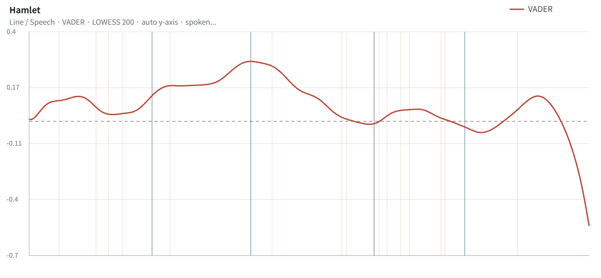
Shakespeare Sentiment Explorer
Character Network
관계망은 Hamlet을 중심으로 강하게 수렴하는 구조를 보인다. Hamlet이 가장 큰 중심 노드로 나타나고, Claudius, Gertrude, Horatio, Ophelia가 그 주변에서 긴밀하게 연결된다. 즉, 네트워크가 여러 군집으로 분리되기보다 하나의 중심 인물에 응축되며, 이는 중앙집중형 붕괴 구조를 지지한다.
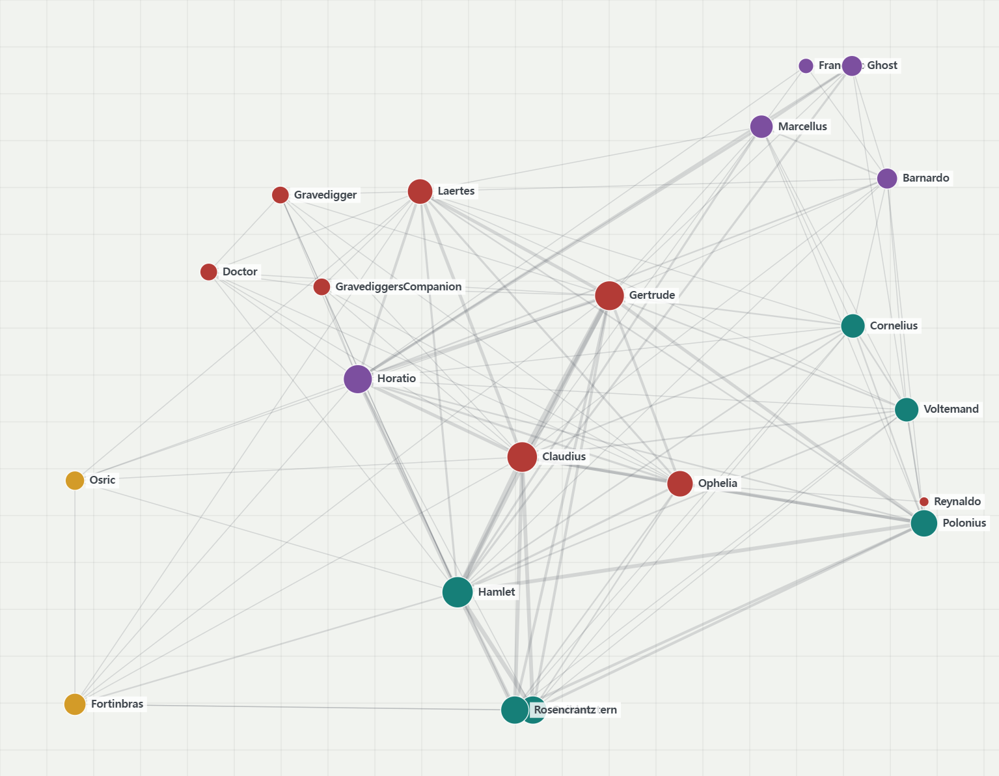
Character Network
2. King Lear-type
King Lear-type
Fractured Thrones + Parallel Collapse
Classification Reason
King Lear-type은 10개 segment의 감정 흐름이 단일 인물의 심리 변화보다 복수의 갈등 집단 사이를 반복적으로 이동하며, 장기적인 긴장과 불안정 상태를 유지하는 구조를 기준으로 Fragmented Conflict Structure라고 정의될 수 있다. 9개 대표작 가운데 King Lear는 Hamlet처럼 마지막에 급락하는 타입이 아니라, 일찍 무너진 뒤 긴 시간 동안 붕괴 상태를 유지하는 가장 전형적인 장기 붕괴형이다. network에서도 Lear, Gloucester, Edmund, Goneril, Regan, Kent, Cordelia 등이 하나의 중심으로 수렴하지 않고, 가족·권력·배신 축이 병렬적으로 충돌한다.
Emotional Flow
King Lear의 감정 흐름은 초반의 비교적 높은 감정 상태에서 시작한 뒤, 빠르게 하강하여 장기적인 불안정 상태를 유지하는 패턴을 보인다. Shakespeare Sentiment Explorer 기준으로 보면 초반 sentiment 값은 약 0.28~0.30 수준에서 시작하지만, 초반부 이후 빠르게 0 이하 영역으로 하강한다. 이후 대부분의 구간에서 sentiment 값은 약 -0.02~-0.08 범위에 머물며, 중간에 나타나는 작은 회복 구간도 전체 감정 방향을 반전시키지 못한다.
특히 후반부에서는 일시적으로 약 0.03~0.05 수준까지 회복되는 구간이 나타나지만, 마지막 segment에서 다시 음수 영역으로 하강한다. 이는 Hamlet-type처럼 마지막 구간에서 급격히 붕괴하는 구조라기보다, 초반 붕괴 이후 장기간 감정 소진 상태가 유지되는 구조에 가깝다. 따라서 King Lear-type의 감정 흐름은 단기 충격형 collapse보다 장기적 negative persistence를 중심으로 조직된다고 볼 수 있다.
Shakespeare Sentiment Explorer 분석에서도 King Lear는 장기적인 부정 감정 유지 구조를 보여준다. 초반부 sentiment 값은 약 0.3 수준으로 비교적 높게 시작하지만, 초반 segment 이후 빠르게 0 이하로 하강하며 이후 대부분의 구간이 음수 영역 근처에서 유지된다. 특히 중반 이후에는 sentiment 값이 약 -0.05~-0.08 범위에서 반복적으로 유지되며, 회복 구간의 폭 역시 제한적으로 나타난다.
이러한 구조는 Voyant Tools에서 확인된 negative dominance 유지 패턴과 높은 구조적 유사성을 보인다. Voyant Tools 기준으로도 negative frequency는 4~7번째 segment에서 약 0.0058~0.0069 수준까지 유지되는 반면, positive frequency는 같은 구간에서 약 0.0028~0.0036 수준에 머문다. 특히 6번째 segment에서는 positive와 negative frequency 사이의 간격이 약 0.004 수준까지 벌어지며, 전체 구간 중 가장 강한 negative dominance가 나타난다.
따라서 King Lear-type은 순간적 감정 폭발보다, 분열된 갈등 구조 속에서 부정 감정이 장기적으로 유지되는 fragmentation-driven collapse structure로 해석될 수 있다.
Emotional Flow (Voyant Tools)
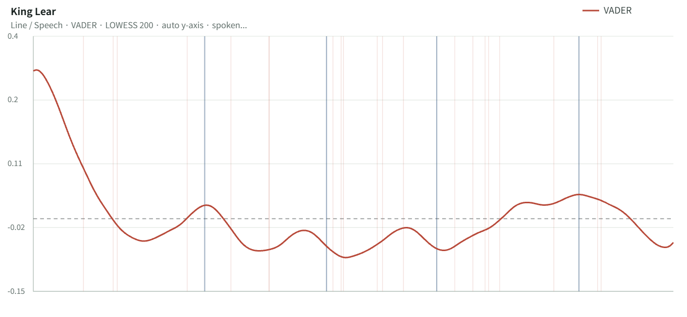
Shakespeare Sentiment Explorer
Character Network
King Lear의 관계망은 단일 중심이 아니라 복수의 conflict bloc이 병렬적으로 작동하는 구조다. Lear 중심의 가족 갈등, Gloucester 서브플롯, Edmund–Edgar 축이 서로 다른 방향으로 움직이며, 관계망은 분열 상태를 유지한다. 따라서 이 작품은 authority collapse가 관계 분열과 결합되는 구조를 가장 명확하게 보여준다.
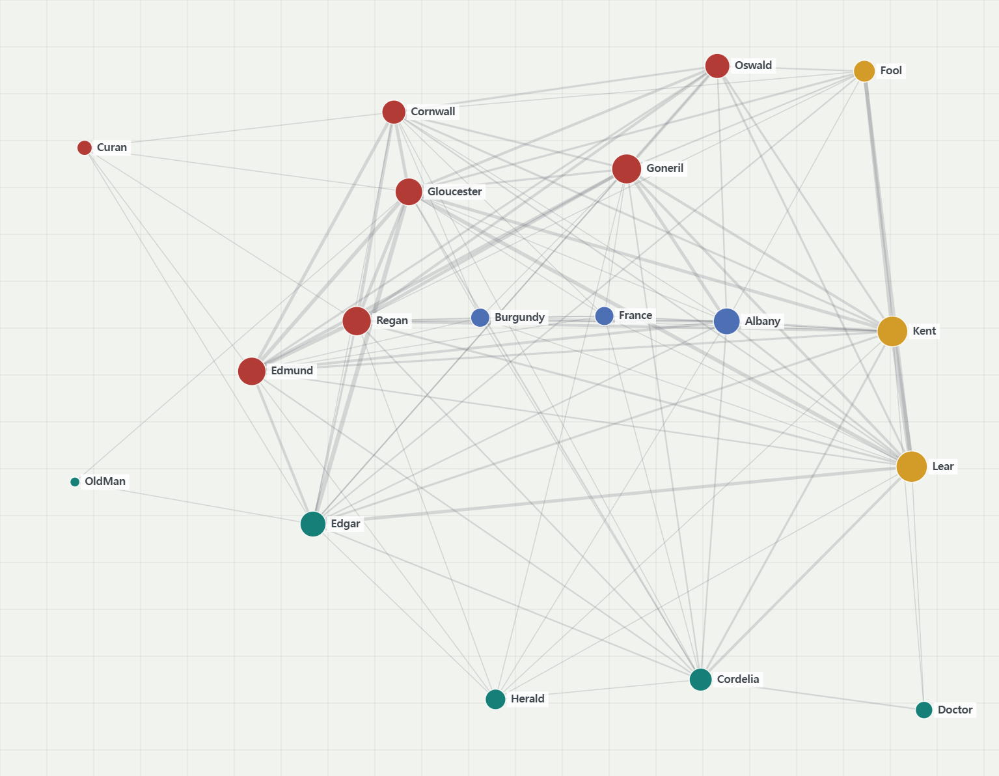
Character Network
3. Richard III-type
Richard III-type
Manipulation Engine + Tyranny Hub
Classification Reason
Richard III-type은 10개 segment 감정 곡선이 권력 장악과 정치적 조작 과정에 따라 급격하게 상승과 하강을 반복하며, 갈등 구조가 특정 권력 중심으로 지속적으로 재집중되는 양상을 기준으로, Manipulative Political Centralization Structure로 정의될 수 있다. 9개 대표작 중 Richard III는 단순한 하강형이 아니라, 권력 장악이 감정 에너지를 끌어올리는 유일하게 뚜렷한 상승-전환형이라는 점이 중요하다. network에서도 Richard와 Buckingham이 핵심 조작 허브로 기능하며, 관계는 alliance의 안정적 유지가 아니라 반복적 생성과 파괴를 통해 재편된다.
Emotional Flow
Richard III의 감정 흐름은 초반의 하강 이후 중반부에서 다시 강하게 상승하고, 이후 재하강하는 비선형 구조를 보인다. Shakespeare Sentiment Explorer 기준으로 보면 초반 sentiment 값은 약 0.03~0.07 수준에서 시작하지만, 3번째 segment 부근에서는 약 -0.12~-0.14 수준까지 급격히 하강한다. 그러나 이후 중반부에서는 sentiment 값이 다시 약 0.18~0.22 수준까지 상승하며, 전체 작품 중 가장 강한 재상승 구간이 형성된다.
특히 이 상승 구간은 단순한 감정 회복이라기보다 권력 장악과 정치적 조작 과정이 감정 에너지를 다시 끌어올리는 구조에 가깝다. 이후 후반부에서는 다시 약 -0.08 수준까지 하강하지만, 마지막 구간 직전 다시 0.15~0.17 수준까지 반등이 나타난다. 따라서 Richard III-type의 감정 흐름은 지속적 붕괴 구조보다 상승–하강–재상승이 반복되는 manipulation-driven emotional oscillation structure로 해석될 수 있다.
Shakespeare Sentiment Explorer 분석에서도 Richard III는 다른 비극 작품들과 구별되는 비선형 감정 구조를 보인다. 대부분의 비극 작품들이 후반부로 갈수록 지속적 하강 방향으로 수렴하는 반면, Richard III는 중반부에서 sentiment 값이 약 0.2 수준까지 반복적으로 회복되며 상승 에너지가 재형성된다. 특히 4~7번째 segment에서는 positive 영역이 장기간 유지되며, 권력 장악 과정 자체가 감정 상승과 직접 연결되는 양상을 보인다.
이러한 구조는 Voyant Tools에서도 확인된다. Voyant 기준으로는 초반 1~3번째 segment에서 negative frequency가 약 0.0062~0.0075 수준까지 상승하며 negative dominance가 강하게 나타난다. 그러나 5~7번째 segment에서는 positive frequency가 약 0.0044~0.0050 수준까지 상승하고, negative frequency는 약 0.0033~0.0047 수준까지 하락하면서 positive dominance 구간이 형성된다. 이후 8번째 segment에서는 다시 negative frequency가 약 0.0062 수준까지 재상승하며 감정 긴장이 다시 강화된다.
따라서 Richard III-type은 단순한 붕괴 구조라기보다, 권력 집중과 정치적 조작 과정 속에서 감정 에너지가 반복적으로 상승·재집중되는 manipulation-centered emotional circulation structure로 해석될 수 있다.
Emotional Flow (Voyant Tools)
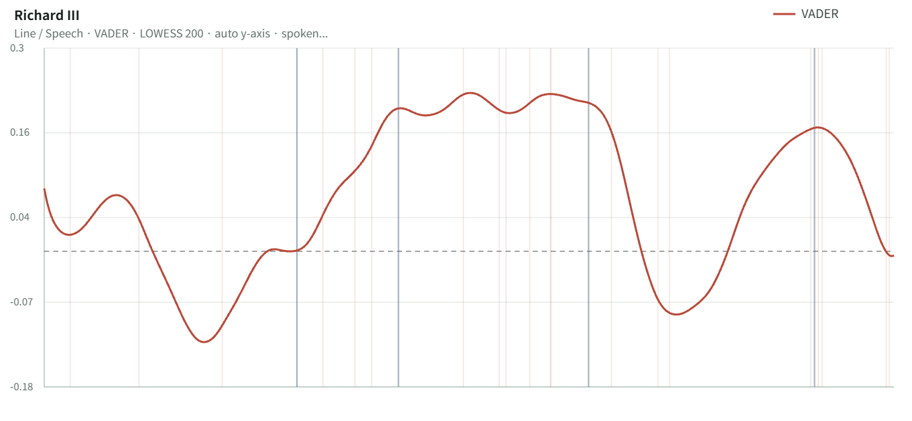
Shakespeare Sentiment Explorer
Character Network
Richard III의 관계망은 Richard 중심의 전략적 정치 허브를 형성한다. Buckingham이 보조 허브로 기능하고, 주변 인물들은 Richard의 조작에 따라 재배열된다. 네트워크는 분열보다 집중이 강하고, 이 점에서 Richard III는 중앙집중적 권력 구조를 가장 직접적으로 보여준다.
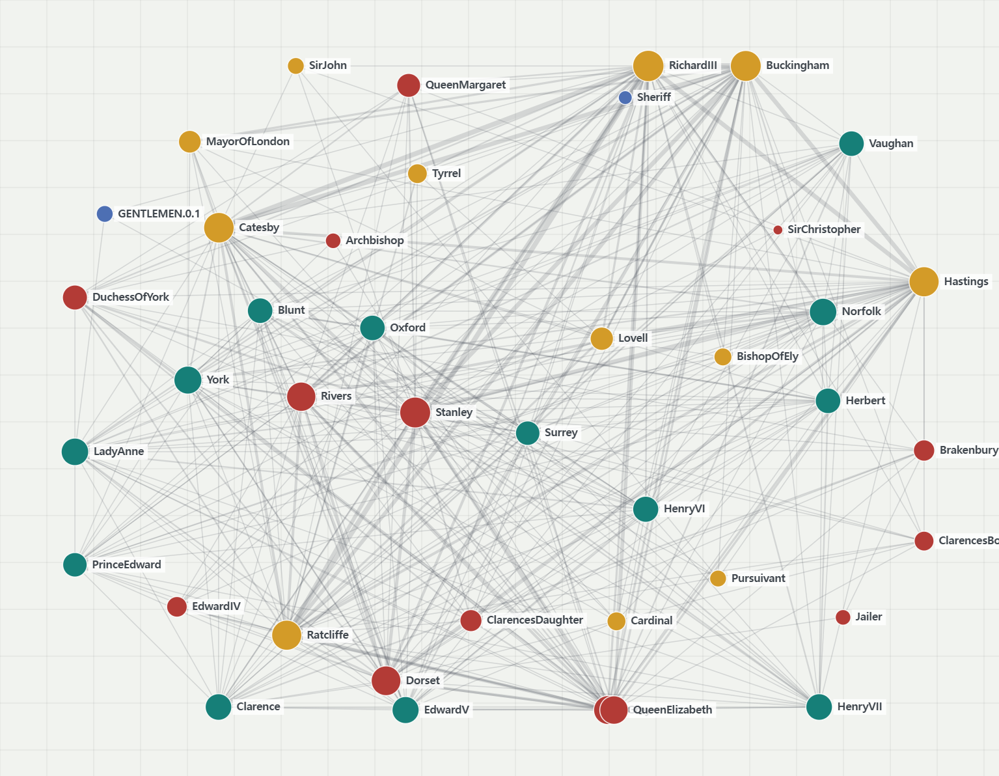
Character Network
4. Titus Andronicus-type
Titus Andronicus-type
Blood Cycle + Entangled Vengeance
Classification Reason
Titus Andronicus-type은 10개 segment에서 감정이이 유형은 감정 흐름이 복수와 보복의 반복 속에서 지속적으로 하강하며, 감정 회복 구간 없이 적대와 파괴가 누적되는 구조를 기준으로 Revenge Entanglement Structure라고 정의될 수 있다. 9개 대표작 중 Titus는 중간 회복이나 안정 구간이 거의 없고, 복수의 반복이 감정선을 지속적으로 깎아내리는 점에서 가장 극단적이다. network에서도 Titus와 Tamora가 분리된 두 진영이 아니라 복수와 혈연 배신으로 강하게 얽힌 revenge bloc을 형성하고, Aaron이 그 사이를 가로지르며 폭력의 순환을 증폭시킨다.
Emotional Flow
Titus Andronicus의 감정 흐름은 초반의 비교적 높은 감정 상태가 거의 지속적으로 하강하는 침식형 구조를 보인다. Shakespeare Sentiment Explorer 기준으로 보면 초반 sentiment 값은 약 0.50~0.55 수준에서 시작하지만, 이후 급격히 하강하여 중반부에서는 약 -0.15~-0.18 수준까지 떨어진다. 이후 일부 구간에서 약 0.08~0.10 수준까지 제한적 반등이 나타나지만, 전체 감정 방향 자체를 회복시키지는 못한다.
특히 후반부에서는 다시 음수 영역으로 하강하며, 마지막 구간에서도 안정적 회복 상태로 수렴하지 않는다. 이는 Hamlet-type처럼 마지막 segment에서 단일 급락이 발생하는 구조와 다르게, 감정 상태가 장기간 침식되며 회복 가능성이 지속적으로 약화되는 구조에 가깝다. 따라서 Titus Andronicus-type의 감정 흐름은 sudden collapse보다 irreversible emotional erosion structure로 해석될 수 있다.
Shakespeare Sentiment Explorer 분석에서도 Titus Andronicus는 회복 안정성이 거의 나타나지 않는 작품으로 확인된다. 초반 이후 sentiment 값은 지속적으로 하강하며, 중반부에서는 대부분의 구간이 음수 영역 근처에서 유지된다. 특히 3~6번째 segment에서는 sentiment 값이 약 -0.10~-0.18 수준에서 장기간 유지되며, 다른 대표작들과 비교했을 때 negative persistence가 가장 길게 유지되는 사례 중 하나로 나타난다.
이러한 구조는 Voyant Tools 분석에서도 확인된다. Voyant 기준으로는 초반 1~2번째 segment에서 positive frequency가 약 0.0052~0.0060 수준으로 높게 시작하지만, 이후 지속적으로 감소하여 6번째와 9번째 segment에서는 약 0.0030 수준까지 하락한다. 반면 negative frequency는 1번째 segment의 약 0.0022 수준에서 지속적으로 상승하여, 4~6번째 segment에서는 약 0.0055~0.0057 수준까지 유지된다. 특히 후반부인 9~10번째 segment에서는 negative frequency가 약 0.0064~0.0066 수준까지 다시 상승하며, positive frequency와의 격차가 가장 크게 벌어진다.
따라서 Titus Andronicus-type은 단순한 비극적 하강이라기보다, 복수와 폭력의 반복 속에서 negative dominance가 장기적으로 누적되며 감정 회복 가능성이 지속적으로 침식되는 revenge-driven emotional degradation structure로 해석될 수 있다.
Emotional Flow (Voyant Tools)
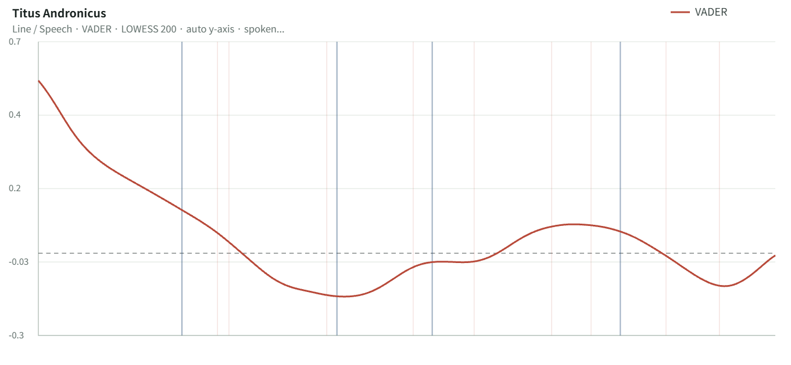
Shakespeare Sentiment Explorer
Character Network
Titus Andronicus의 관계망은 Titus–Tamora의 revenge blocs와 Aaron의 cross-network manipulation으로 조직된다. 네트워크는 단일 허브보다는 적대적 집단의 얽힘이 강하고, 관계의 핵심은 협력이 아니라 폭력의 순환이다. 이 구조는 복수가 관계망 자체를 조직하는 원리라는 점을 분명히 보여준다.
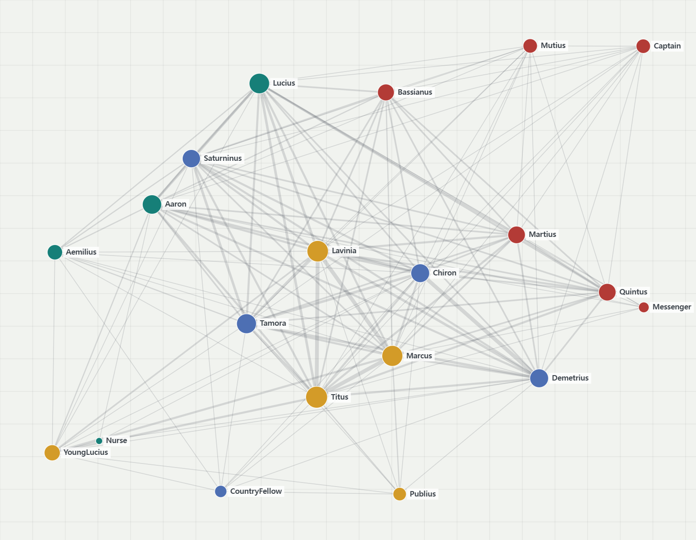
Character Network
5. Twelfth Night-type
Twelfth Night-type
Emotional Reversal + Social Rewiring
Classification Reason
Twelfth Night-type은 10개 segment에서 감정 흐름이 급격한 붕괴보다 긴장과 완화의 반복 속에서 점진적으로 안정 방향으로 수렴하는 구조를 기준으로 Relational Negotiation Structure라고 정의될 수 있다. 9개 대표작 가운데 Twelfth Night는 한 번의 붕괴나 한 번의 상승이 아니라, 여러 차례의 재조정과 재통합이 반복되는 가장 전형적인 협상형 패턴을 보여 준다. network에서도 Viola를 중심으로 Orsino, Olivia, Maria, Sir Toby, Feste 등이 촘촘하게 연결되며, 관계는 고정되기보다 계속 재배치된다.
Emotional Flow
Twelfth Night의 감정 흐름은 단일 붕괴나 단일 상승보다, 반복적인 긴장–완화–재조정이 교차하는 진동형 구조를 보인다. Shakespeare Sentiment Explorer 기준으로 보면 초반 sentiment 값은 약 0.35~0.38 수준에서 시작한 뒤, 초반부에는 약 0.08~0.10 수준까지 완만하게 하강한다. 이후 중반부에서는 다시 약 0.20~0.24 수준까지 상승하며, 감정 상태가 반복적으로 재조정된다.
특히 후반부에서도 감정 곡선은 급격한 붕괴로 수렴하지 않고, 약 0.02~0.07 수준의 제한적 회복과 재하강을 반복한다. 마지막 segment에서는 약 -0.05 수준까지 하강하지만, Hamlet-type이나 Titus-type처럼 비가역적 붕괴 구조로 이어지지는 않는다. 따라서 Twelfth Night-type의 감정 흐름은 collapse structure보다 반복적 emotional negotiation과 relational stabilization을 중심으로 조직된 oscillation structure로 해석될 수 있다.
Shakespeare Sentiment Explorer 분석에서도 Twelfth Night는 감정 반전 이후 안정 상태가 반복적으로 회복되는 구조를 보여준다. 전체 곡선은 장기 하강 방향보다 상승과 하강이 반복되는 wave-like trajectory를 유지하며, 중반부에서는 sentiment 값이 약 0.20~0.24 수준까지 재상승한다. 이후 후반부에서도 감정 상태가 완전히 붕괴되지 않고, 제한적 하강과 회복이 반복적으로 나타난다.
이러한 구조는 Voyant Tools 분석에서도 확인된다. Voyant 기준으로는 2~4번째 segment에서 positive frequency가 약 0.0049~0.0054 수준까지 유지되는 반면, negative frequency는 약 0.0029~0.0030 수준에 머문다. 이후 7~9번째 segment에서는 negative frequency가 약 0.0043~0.0048 수준까지 상승하지만, positive frequency 역시 약 0.0040~0.0046 수준을 유지하며 완전한 negative dominance로 수렴하지 않는다. 특히 8~9번째 segment에서는 positive와 negative frequency가 거의 유사한 수준으로 반복 교차하며, 감정 상태가 지속적으로 재조정되는 양상이 나타난다.
따라서 Twelfth Night-type은 단순한 감정 상승형 희극이라기보다, 관계 협상과 사회적 재배열 과정 속에서 감정 균형이 반복적으로 재구성되는 relational oscillation structure로 해석될 수 있다.
Emotional Flow (Voyant Tools)
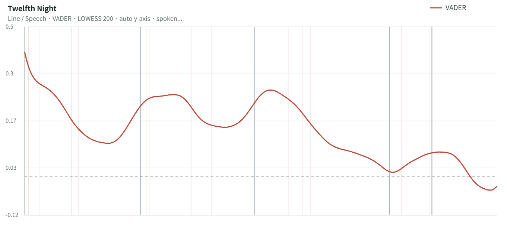
Shakespeare Sentiment Explorer
Character Network
Twelfth Night의 관계망은 Viola 중심의 dense ensemble 구조다. Viola, Orsino, Olivia를 비롯한 인물들이 가깝게 연결되어 있고, 관계의 위치가 계속 바뀐다. 이 네트워크는 사회적 관계가 협상을 통해 재배치된다는 점을 가장 직접적으로 보여 준다.
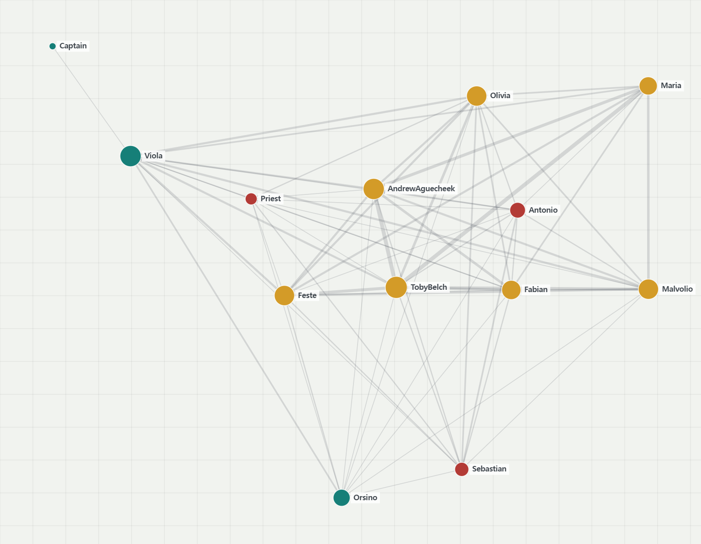
Character Network
6. The Taming of the Shrew-type
The Taming of the Shrew-type
Controlled Tension + Dominant Pair Axis
Classification Reason
The Taming of the Shrew-type은 10개 segment에서 감정 흐름이 복수의 관계 집단보다 특정 중심 관계축의 긴장 변화에 따라 조직되는 구조를 기준으로 Hierarchical Negotiation Structure라고 정의될 수 있다. 9개 대표작 중 이 작품은 완전한 혼란형도, 완전한 회복형도 아니며, Petruchio–Katherine의 관계축이 전체 감정 변화를 지배하는 가장 강한 pair-centered 구조를 보여 준다. network에서도 두 인물이 중심 축을 형성하고 다른 인물은 이를 보조한다.
Emotional Flow
The Taming of the Shrew의 감정 흐름은 급격한 붕괴나 혼란 확산보다, 특정 관계축 내부의 긴장 조절과 재안정화 과정을 중심으로 조직된다. Shakespeare Sentiment Explorer 기준으로 보면 초반 sentiment 값은 약 0.20 수준에서 시작하여, 2~3번째 segment에서는 약 0.33~0.35 수준까지 상승한다. 이후 중반부에서는 약 0.12~0.15 수준까지 하강하지만, 감정 곡선 전체가 음수 영역으로 붕괴하지는 않는다.
특히 후반부에서는 sentiment 값이 약 0.07 수준까지 일시적으로 낮아진 뒤, 마지막 segment 부근에서 다시 약 0.16~0.17 수준까지 회복된다. 이는 Twelfth Night-type처럼 다수 관계망 전체가 반복적으로 재배열되는 구조와 달리, 중심 관계축 내부의 긴장 조절이 감정 흐름 전체를 통제하는 구조에 가깝다. 따라서 The Taming of the Shrew-type의 감정 흐름은 conflict-resolution collapse보다 controlled relational stabilization structure로 해석될 수 있다.
Shakespeare Sentiment Explorer 분석에서도 The Taming of the Shrew는 감정 변화 자체보다 중심 관계축의 협상 과정이 전체 감정 흐름을 조직하는 양상을 보인다. 전체 곡선은 장기 하강이나 급격한 붕괴로 수렴하지 않고, 상승–하강–재안정화가 반복되는 controlled oscillation pattern을 유지한다. 특히 중반부 이후에도 sentiment 값은 대부분 0 이상의 영역을 유지하며, 감정 불안정성이 구조 전체를 붕괴시키지 않는다.
이러한 구조는 Voyant Tools 분석에서도 확인된다. Voyant 기준으로는 2~5번째 segment에서 positive frequency가 약 0.0045~0.0052 수준까지 유지되는 반면, negative frequency는 약 0.0030~0.0034 수준에 머문다. 이후 6~7번째 segment에서는 positive와 negative frequency가 모두 약 0.0038~0.0040 수준에서 수렴하며 긴장 상태가 형성되지만, 후반부 8~9번째 segment에서는 positive frequency가 다시 약 0.0054 수준까지 상승하고 negative frequency는 약 0.0020 수준까지 하락한다.
특히 이 작품에서는 positive dominance와 negative dominance가 반복 교차하더라도, 감정 구조 전체가 장기 음수 상태로 붕괴하지 않는다는 점이 특징적이다. 따라서 The Taming of the Shrew-type은 다수 집단 충돌 중심 구조가 아니라, 중심 관계쌍 내부의 위계 협상과 감정 재조정이 전체 감정 흐름을 안정적으로 통제하는 hierarchical negotiation structure로 해석될 수 있다.
Emotional Flow (Voyant Tools)
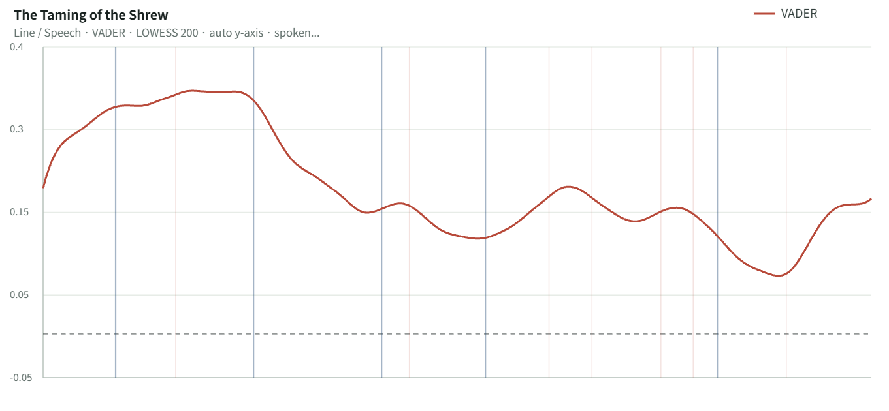
Shakespeare Sentiment Explorer
Character Network
The Taming of the Shrew의 네트워크는 Petruchio–Katherine pair-axis dominance가 핵심이다. Lucentio–Bianca 축이 존재하지만 중심 구조를 대체하지 못하고, 전체 network는 위계적으로 정렬된다. 즉, 관계망은 중심 관계쌍이 조직하고 주변 인물은 이를 보조하는 형태다.
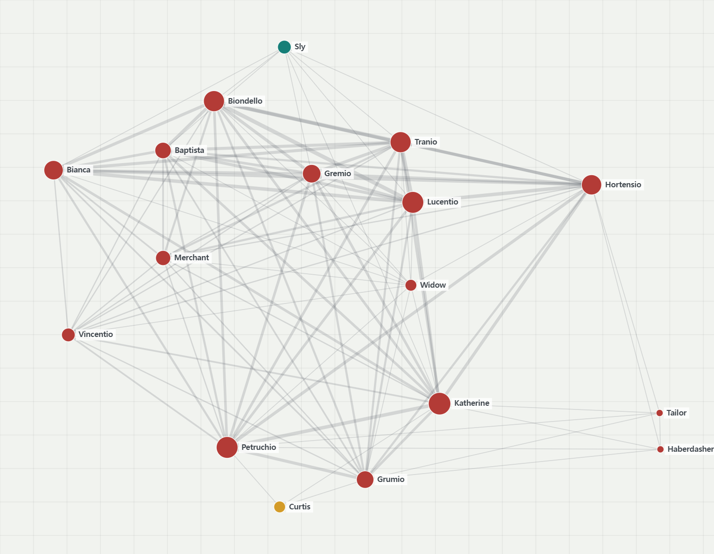
Character Network
7. A Midsummer Night's Dream-type
A Midsummer Night's Dream-type
Collision Spiral + Overlapping Clusters
Classification Reason
A Midsummer Night’s Dream-type은 10개 segment에서 감정 흐름이 짧은 단위의 충돌과 오인을 반복적으로 발생시키며, 빠른 감정 전환과 진동 구조를 지속적으로 유지하는 양상을 기준으로 Chaotic Collision Structure라고 정의될 수 있다. 9개 대표작 중 이 작품은 붕괴보다 진동이 훨씬 강하고, 특히 여러 집단이 동시에 충돌하는 구조가 감정의 빠른 변화를 만든다. network에서는 연인들, 요정 왕국, 하층민 극단이 한 공간에서 겹치며 multi-cluster overlap을 형성한다.
Emotional Flow
A Midsummer Night’s Dream의 감정 흐름은 장기 붕괴보다 빠른 충돌과 즉각적 회복이 반복되는 고진동 구조를 보인다. Shakespeare Sentiment Explorer 기준으로 보면 초반 sentiment 값은 약 0.58~0.60 수준에서 시작하며, 초반부에는 약 0.25 수준까지 비교적 빠르게 하강한다. 그러나 이후 감정 곡선은 지속적으로 음수 영역으로 붕괴하지 않고, 중반 이후 다시 약 0.30~0.32 수준까지 회복된다.
특히 중반부에서는 sentiment 값이 약 0.08~0.10 수준까지 일시적으로 낮아지지만, 이후 다시 빠르게 반등한다. 후반부에서도 감정 곡선은 재하강과 회복을 반복하며, 마지막 segment 역시 약 0.12~0.15 수준의 양수 영역에서 유지된다. 이는 Hamlet-type이나 Titus-type처럼 감정 붕괴가 누적되는 구조와 다르게, 혼란 자체가 반복적 재조정과 즉각적 회복을 유발하는 구조에 가깝다. 따라서 A Midsummer Night’s Dream-type의 감정 흐름은 collapse structure보다 high-frequency collision oscillation structure로 해석될 수 있다.
Shakespeare Sentiment Explorer 분석에서도 A Midsummer Night’s Dream은 가장 빠른 감정 진동 구조 중 하나를 보여준다. 전체 곡선은 반복적 상승과 하강을 지속하지만, 그 변동이 장기 음수 상태로 수렴하지 않는다. 특히 중반부의 감정 하강 이후에도 회복 속도가 매우 빠르게 나타나며, 감정 혼란이 곧바로 관계 재조정과 연결된다.
이러한 구조는 Voyant Tools 분석에서도 확인된다. Voyant 기준으로는 1번째 segment에서 positive frequency가 약 0.0057 수준으로 높게 시작하며, negative frequency는 약 0.0030 수준에 머문다. 이후 4~6번째 segment에서는 positive와 negative frequency가 모두 약 0.0043~0.0061 수준 사이에서 빠르게 교차하며 높은 oscillation intensity가 형성된다. 특히 6번째 segment에서는 negative frequency가 약 0.0061 수준까지 상승하지만, 바로 이후 7~9번째 segment에서는 positive frequency가 다시 약 0.0042~0.0053 수준까지 회복된다.
또한 positive dominance와 negative dominance가 짧은 간격으로 반복 교체된다는 점 역시 특징적이다. 이는 감정 충돌이 장기 붕괴로 이어지기보다, 오인·충돌·재결합이 반복되는 ensemble collision mechanism으로 작동한다는 점을 보여준다. 따라서 A Midsummer Night’s Dream-type은 관계 충돌과 집단 혼란이 빠른 감정 진동과 즉각적 재조정을 지속적으로 발생시키는 chaotic collision structure로 해석될 수 있다.
Emotional Flow (Voyant Tools)Shakespeare Sentiment Explorer
Character Network
A Midsummer Night’s Dream의 네트워크는 3개의 이질적 클러스터가 숲이라는 공간에서 충돌하는 구조다. 연인들, 요정 집단, 하층민 극단이 서로 겹치며 관계가 뒤섞이고, Puck의 개입이 이 충돌을 증폭시킨다. 이 구조는 오인과 충돌이 감정 혼란을 만드는 대표적 사례다.
Character Network
8. Romeo and Juliet-type
Romeo and Juliet-type
Forbidden Bridge + Fatal Convergence
Classification Reason
Romeo and Juliet-type은 10개 segment에서 이 유형은 감정 흐름이 서로 분리된 두 집단 사이의 긴장과 충돌 속에서 점진적으로 비극적 결말 방향으로 수렴하는 구조를 기준으로 Dual-Cluster Tragic Convergence Structure라고 정의될 수 있다. 9개 대표작 가운데 이 작품은 가장 명확한 “상승-유지-붕괴” 패턴을 보여 주며, 사랑의 연결이 강해질수록 외부 압력이 더 크게 작동한다. network에서는 Montague와 Capulet이라는 dual blocs가 유지되고, Romeo–Juliet이 그 사이를 잇는 bridge로 기능하지만 통합은 실패한다.
Emotional Flow
Romeo and Juliet의 감정 흐름은 빠른 감정 상승 이후 장기간의 고점 유지, 그리고 후반부 급격한 붕괴로 수렴하는 구조를 보인다. Shakespeare Sentiment Explorer 기준으로 보면 초반 sentiment 값은 약 -0.20~-0.25 수준의 불안정 상태에서 시작하지만, 2~5번째 segment에서는 약 0.18~0.22 수준까지 빠르게 상승하며 장기간 유지된다. 이는 대표작들 가운데 가장 선명한 “상승–유지” 구간 중 하나에 해당한다.
특히 중반부 이후에도 sentiment 값은 비교적 안정적으로 유지되지만, 후반부에서는 약 -0.10 수준까지 급격히 하강하며 마지막 segment에서는 약 -0.45~-0.50 수준까지 붕괴한다. 이 급락 폭은 Hamlet-type보다 더 늦게 시작되지만, 하강 속도 자체는 가장 가파른 수준에 가깝다. 따라서 Romeo and Juliet-type의 감정 흐름은 단순한 비극적 하강 구조보다, 감정적 결속이 장기간 유지된 이후 구조적 압력에 의해 급격히 붕괴하는 delayed tragic convergence structure로 해석될 수 있다.
Shakespeare Sentiment Explorer 분석에서도 Romeo and Juliet은 가장 뚜렷한 “상승–유지–붕괴” 구조를 보여준다. 초반의 부정 감정 상태는 빠르게 양수 영역으로 전환되며, 중반부에서는 sentiment 값이 약 0.18~0.22 수준에서 비교적 안정적으로 유지된다. 이는 단순한 순간적 감정 상승이 아니라, 감정 연결 자체가 장기간 유지되는 구조임을 보여준다.
그러나 후반부에서는 감정 상태가 급격히 붕괴한다. 특히 마지막 구간에서는 sentiment 값이 약 -0.45 수준까지 급락하며, 전체 대표작 중 가장 극적인 late collapse 중 하나가 형성된다. 이는 감정 연결은 성공적으로 형성되지만, 외부 사회 구조가 그 연결을 지속적으로 압박하면서 최종 붕괴가 발생하는 구조와 직접 연결된다.
이러한 구조는 Voyant Tools 분석에서도 확인된다. Voyant 기준으로는 3~4번째 segment에서 positive frequency가 약 0.0050~0.0055 수준까지 상승하고, negative frequency는 약 0.0028~0.0042 수준에 머문다. 그러나 6번째 segment 이후에는 negative frequency가 약 0.0071 수준까지 급등하며 전체 구간 중 가장 강한 negative dominance가 나타난다. 이후 후반부 8~10번째 segment에서도 negative frequency는 약 0.0047~0.0066 수준으로 지속 상승하는 반면, positive frequency는 약 0.0039~0.0029 수준까지 지속적으로 감소한다.
특히 positive dominance가 장기간 유지된 이후 sudden reversal이 발생한다는 점은, 이 작품의 핵심이 단순한 비극적 충돌이 아니라 “감정적 수렴과 구조적 실패의 충돌”에 있다는 점을 보여준다. 따라서 Romeo and Juliet-type은 두 집단 사이의 감정 연결이 장기적으로 유지되지만, 외부 구조 압력이 결국 그 연결을 붕괴시키는 dual-cluster tragic convergence structure로 해석될 수 있다.
Emotional Flow (Voyant Tools)
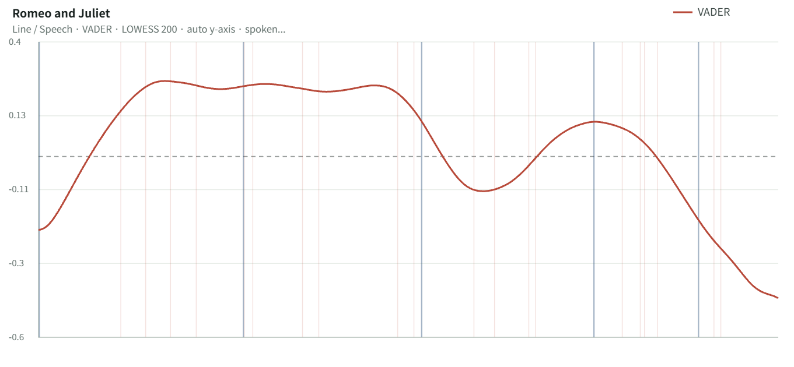
Shakespeare Sentiment Explorer
Character Network
Romeo and Juliet의 관계망은 Montague–Capulet dual blocs와 Romeo–Juliet bridge connection이 핵심이다. 두 집단은 끝까지 분리되어 있고, 연인 관계는 그 분리를 일시적으로 가로지르지만 구조를 바꾸지는 못한다. 이 점에서 이 작품은 감정적 연결과 구조적 실패가 동시에 나타나는 비극형으로 읽힌다.
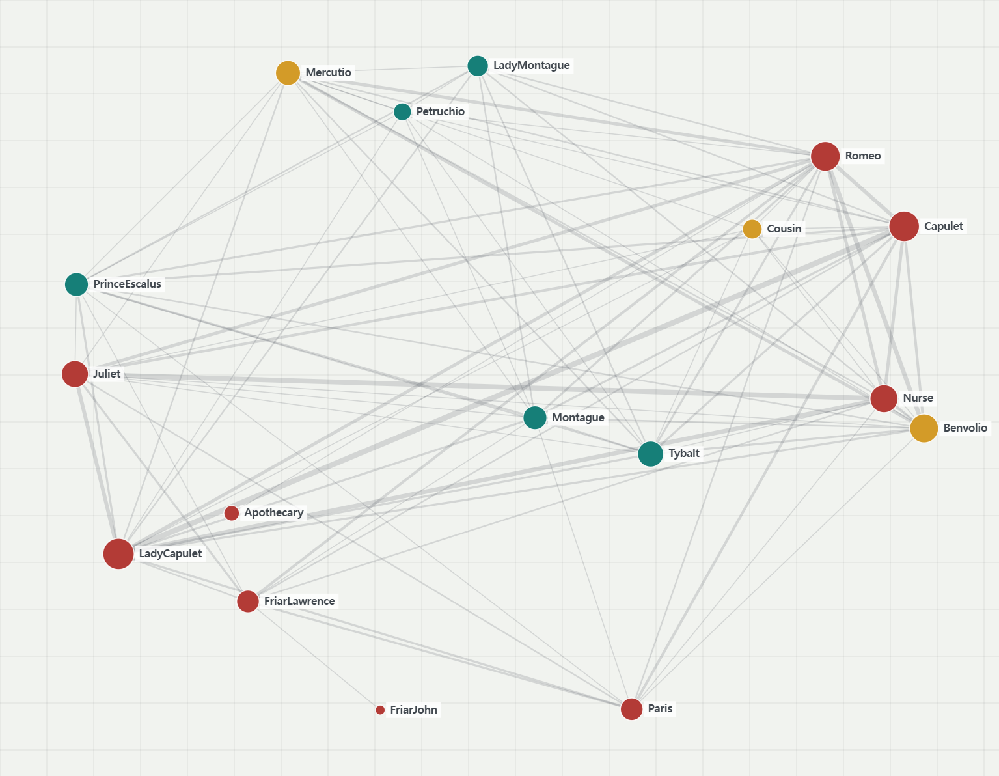
Character Network
9. The Tempest-type
The Tempest-type
Restoration Arc + Mediator Nexus
Classification Reason
The Tempest-type은 10개 segment에서 감정 흐름이 장기적인 갈등과 분리 상태를 거친 이후, 후반부로 갈수록 회복과 안정 방향으로 점진적으로 수렴하는 구조를 기준으로 Mediated Reconciliation Structure라고 정의될 수 있다. 상승 지향적인 감정 곡선과 후반부 안정화가 가장 뚜렷하게 나타나는 회복형이다. 9개 대표작 중 이 작품은 가장 명확한 재통합과 복원 곡선을 보여 주며, 중간의 흔들림이 있어도 결말은 회복으로 수렴한다. network에서도 Prospero가 중심 mediator로 기능하고, 다양한 집단을 하나의 질서로 다시 묶는다.
Emotional Flow
The Tempest의 감정 흐름은 초반의 긴장과 불안정 상태에서 출발한 뒤, 후반부로 갈수록 점진적 회복과 안정 방향으로 수렴하는 회복형 구조를 보인다. Shakespeare Sentiment Explorer 기준으로 보면 초반 sentiment 값은 약 0.08~0.10 수준에서 시작하며, 중반부에는 약 0.12~0.19 수준까지 점진적으로 상승한다. 이후 일부 구간에서 약 0.12 수준까지 일시적 하강이 나타나지만, 전체 곡선은 지속적으로 양수 영역을 유지한다.
특히 후반부에서는 sentiment 값이 다시 약 0.18~0.24 수준까지 상승하며, 마지막 segment 역시 안정적인 양수 상태에서 마무리된다. 이는 Hamlet-type이나 Romeo and Juliet-type처럼 후반 붕괴로 수렴하는 구조와 달리, 갈등 이후 감정 안정성과 재통합이 지속적으로 강화되는 구조에 가깝다. 따라서 The Tempest-type의 감정 흐름은 collapse structure보다 restorative convergence structure로 해석될 수 있다.
Shakespeare Sentiment Explorer 분석에서도 The Tempest는 가장 안정적인 회복 구조 중 하나를 보여준다. 전체 곡선은 급격한 감정 붕괴 없이 완만한 상승과 재안정화를 반복하며, 후반부로 갈수록 positive persistence가 강화된다. 특히 5~10번째 segment에서는 sentiment 값이 대부분 약 0.15~0.24 수준의 양수 영역에서 유지되며, 장기 음수 상태로 붕괴하지 않는다.
이러한 구조는 Voyant Tools 분석에서도 확인된다. Voyant 기준으로는 초반 1~3번째 segment에서 negative frequency가 약 0.0042~0.0049 수준으로 positive frequency보다 높게 나타난다. 그러나 중반 이후에는 positive frequency가 점진적으로 회복되며, 6번째와 8번째 segment에서는 약 0.0048~0.0050 수준까지 상승한다. 반면 negative frequency는 중반부 5~6번째 segment에서 약 0.0056~0.0061 수준까지 일시적으로 상승하지만, 후반부로 갈수록 약 0.0039~0.0040 수준까지 다시 감소한다.
특히 마지막 segment에서는 positive와 negative frequency가 거의 동일한 수준으로 수렴하며, 감정 충돌이 파국이 아니라 안정적 균형 상태로 재조정된다는 점이 나타난다. 이는 다른 대표작들에서 나타나는 final collapse pattern과 뚜렷하게 구분된다. 따라서 The Tempest-type은 분열된 관계와 감정 갈등이 중심 중재자를 통해 점진적으로 재통합되며, 최종적으로 안정 상태에 도달하는 mediated reconciliation structure로 해석될 수 있다.
Emotional Flow (Voyant Tools)
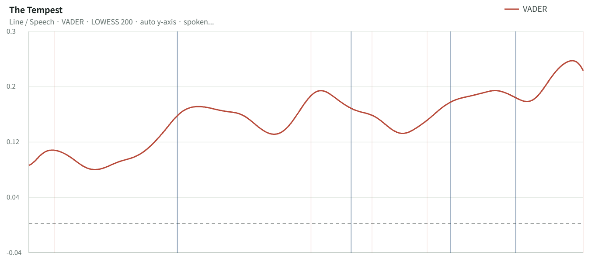
Shakespeare Sentiment Explorer
Character Network
The Tempest의 네트워크는 Prospero를 중심으로 한 mediator nexus가 핵심이다. 정치 집단, 가족 집단, 희극적 혼란 집단, 초자연적 존재들이 Prospero를 통해 다시 연결되며, 관계망은 재통합된다. 이 구조는 분열된 관계가 중심 중재자를 통해 하나의 질서로 돌아가는 형태를 가장 명확하게 보여 준다.
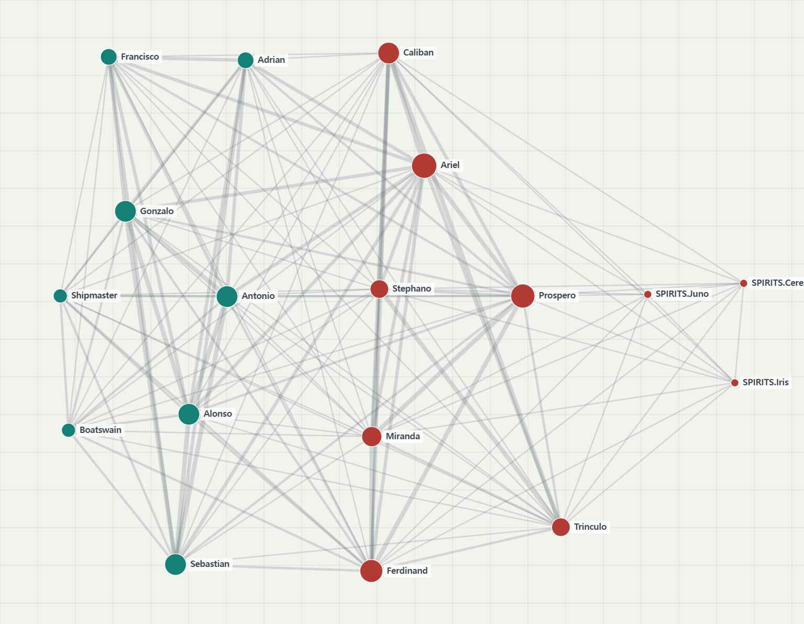
Character Network
4. Reflection and Conclusion
결론
본 연구는 셰익스피어의 37개 작품을 전통적인 희극·비극·역사극의 장르 구분이 아니라, 작품 내부에서 반복적으로 나타나는 감정 흐름과 인물 관계망의 결합 방식에 따라 재분류하고자 하였다. 분석 결과, 셰익스피어 작품들은 단순히 비극·희극·역사극이라는 외형적 장르보다, 감정이 어떤 방향으로 이동하는지와 그 감정이 어떠한 관계 구조 안에서 발생하는지에 따라 훨씬 더 구조적으로 구분될 수 있음을 확인하였다. 같은 비극 안에서도 심리 붕괴형, 분열 갈등형, 조작적 권력 집중형이 서로 다른 서사 동역학을 보였고, 반대로 서로 다른 장르에 속한 작품들 사이에서도 유사한 감정 전개와 관계망 조직 원리가 반복되었다. 이는 셰익스피어 작품을 이해하는 데 있어 결말의 종류보다 서사 내부의 작동 방식이 더 중요한 분류 축이 될 수 있음을 보여준다.
특히 본 연구를 통해 도출된 9개 유형은 우연히 나뉜 숫자가 아니라, 37개 작품을 감정 흐름과 관계 구조라는 두 축으로 반복 비교하는 과정에서 안정적으로 수렴한 결과였다. 감정 흐름만 유사하고 관계 구조가 다른 작품들은 같은 유형으로 묶지 않았고, 관계 구조는 비슷하더라도 감정 전개 방식이 다르면 별도의 유형으로 분리하였다. 이 과정에서 가장 어려웠던 점은 경계가 가까운 작품들을 어디까지 같은 유형으로 볼 것인가를 판단하는 일이었다. 협상형, 분열형, 충돌형처럼 서로 유사해 보이는 구조들은 감정 변화의 위치, 회복의 지속성, 관계망의 집중도, 집단 분열 정도를 함께 비교해야만 구분할 수 있었다. 따라서 이 분류 체계는 단순한 자동 분류의 결과가 아니라, 데이터가 보여주는 반복 패턴 위에 구조적 판단을 더해 완성한 탐색적 유형화라고 볼 수 있다.
이 분석이 보여주는 또 하나의 중요한 결과는, 작품들이 서로 다른 장르 이름 아래 묶여 있더라도 실제 시청 경험은 매우 다른 방식으로 조직된다는 점이다. 어떤 작품은 단일 중심 인물의 심리 붕괴에 몰입하게 만들고, 어떤 작품은 분열된 집단 갈등을 장시간 추적하게 하며, 또 어떤 작품은 관계 협상과 재조정의 흐름 자체를 중심 경험으로 만든다. 반대로 장르가 다르더라도 유사한 감정 구조와 관계 구조를 공유하면 같은 유형 안에서 충분히 설명될 수 있다. 따라서 본 연구의 분류는 작품의 주제나 결말보다, 시청자가 어떤 감정 경험과 관계 경험을 하게 되는지를 중심으로 콘텐츠를 읽는 방식이라고 할 수 있다. 이런 점에서 각 유형은 특정한 시청자에게 직접 연결된다. 예를 들어 중심 인물의 심리 변화에 깊게 몰입하는 시청자는 붕괴형 구조에 반응하고, 관계의 재배열과 화해 과정을 따라가는 시청자는 협상형 구조에 반응하며, 집단 충돌과 긴장 축적을 즐기는 시청자는 분열형이나 충돌형 구조에 더 강하게 연결된다.
작업 과정에서는 몇 가지 한계도 분명했다. 먼저 감정 분석은 긍정·부정의 대비를 중심으로 이루어지기 때문에 아이러니, 애매성, 복합 감정처럼 단순한 수치로 포착하기 어려운 요소를 완전히 설명하지는 못한다. 또한 인물 관계망 분석은 관계의 구조를 선명하게 보여주지만, 관계의 질적 깊이나 심리적 뉘앙스까지 직접 계량화하지는 못한다. 작품을 일정한 구간으로 나누어 비교하는 방식 역시 전체 흐름을 파악하는 데는 유효했지만, 장면 내부의 미세한 감정 변화까지 모두 반영하지는 못했다. 그럼에도 불구하고 두 분석 도구를 함께 사용함으로써, 한 도구만으로는 드러나지 않는 감정 이동과 관계망 구조의 결합 양상을 확인할 수 있었다.
마지막으로 이 분류 체계는 셰익스피어 분석에만 머무르지 않는다. 스트리밍 플랫폼의 관점에서 보면, 이 taxonomy는 작품을 장르명으로만 나누는 방식이 아니라, 어떤 감정 경험과 관계 구조를 제공하는지에 따라 분류하는 새로운 추천 틀로 확장될 수 있다. 다시 말해 “비극”이나 “희극”이 아니라, 심리 붕괴형, 관계 협상형, 충돌 중심형, 회복 재통합형처럼 시청 경험 중심의 분류가 가능해진다. 따라서 본 연구는 셰익스피어 작품을 감정과 관계의 구조로 다시 읽는 시도이자, 향후 영화·드라마·스트리밍 콘텐츠 전반에 적용 가능한 서사 분류 모델의 기초를 제시하는 작업이다.
5. References
참고문헌
Kim, E., & Klinger, R. (2018). A survey on sentiment and emotion analysis for computational literary studies. arXiv. https://arxiv.org/abs/1808.03137
Lee, J., & Lee, J. (2017). Shakespeare’s tragic social network: Or what social network analysis can tell us about Shakespearean tragedy. Digital Humanities Quarterly, 11(2). http://www.digitalhumanities.org/dhq/vol/11/2/000289/000289.html
Moretti, F. (2011). Network theory, plot analysis. New Left Review, 68, 80–102. https://newleftreview.org/issues/ii68/articles/franco-moretti-network-theory-plot-analysis
Reagan, A. J., Mitchell, L., Kiley, D., Danforth, C. M., & Dodds, P. S. (2016). The emotional arcs of stories are dominated by six basic shapes. EPJ Data Science, 5(1), 1–12. https://doi.org/10.1140/epjds/s13688-016-0093-1